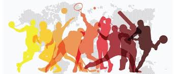

Sport (British English) or sports (American English) includes all forms of competitive physical activity or games which,[1] through casual or organised participation, aim to use, maintain or improve physical ability and skills while providing enjoyment to participants, and in some cases, entertainment for spectators.[2] Usually the contest or game is between two sides, each attempting to exceed the other. Some sports allow a tie game; others provide tie-breaking methods, to ensure one winner and one loser. A number of such two-sided contests may be arranged in a tournament producing a champion. Many sports leagues make an annual champion by arranging games in a regular sports season, followed in some cases by playoffs. Hundreds of sports exist, from those between single contestants, through to those with hundreds of simultaneous participants, either in teams or competing as individuals. In certain sports such as racing, many contestants may compete, each against each other, with one winner.
Sport is generally recognised as system of activities which are based in physical athleticism or physical dexterity, with the largest major competitions such as the Olympic Games admitting only sports meeting this definition,[3] and other organisations such as the Council of Europe using definitions precluding activities without a physical element from classification as sports.[2] However, a number of competitive, but non-physical, activities claim recognition as mind sports. The International Olympic Committee (through ARISF) recognises both chess and bridge as bona fide sports, and SportAccord, the international sports federation association, recognises five non-physical sports: bridge, chess, draughts (checkers), Go and xiangqi,[4][5] and limits the number of mind games which can be admitted as sports.[1]
Sports are usually governed by a set of rules or customs, which serve to ensure fair competition, and allow consistent adjudication of the winner. Winning can be determined by physical events such as scoring goals or crossing a line first. It can also be determined by judges who are scoring elements of the sporting performance, including objective or subjective measures such as technical performance or artistic impression.
Records of performance are often kept, and for popular sports, this information may be widely announced or reported in sport news. Sport is also a major source of entertainment for non-participants, with spectator sport drawing large crowds to sport venues, and reaching wider audiences through broadcasting. Sports betting is in some cases severely regulated, and in some cases is central to the sport.
According to A.T. Kearney, a consultancy, the global sporting industry is worth up to $620 billion as of 2013.[6] The world's most accessible and practiced sport is running, while association football is its most popular spectator sport.[7][8]
Meaning and usage
Etymology
The word "Sport" comes from the Old French desport meaning "leisure", with the oldest definition in English from around 1300 being "anything humans find amusing or entertaining".[9]
Other meanings include gambling and events staged for the purpose of gambling; hunting; and games and diversions, including ones that require exercise.[10] Roget's defines the noun sport as an "activity engaged in for relaxation and amusement" with synonyms including diversion and recreation.[11]
Nomenclature
The singular term "sport" is used in most English dialects to describe the overall concept (e.g. "children taking part in sport"), with "sports" used to describe multiple activities (e.g. "football and rugby are the most popular sports in England"). American English uses "sports" for both terms.
Definition
See also: Game § Definitions
The International Olympic Committee recognizes some board games as sports including chess.
Show jumping, an equestrian sport
The precise definition of what separates a sport from other leisure activities varies between sources. The closest to an international agreement on a definition is provided by SportAccord, which is the association for all the largest international sports federations (including association football, athletics, cycling, tennis, equestrian sports, and more), and is therefore the de facto representative of international sport.
SportAccord uses the following criteria, determining that a sport should:[1]
have an element of competition
be in no way harmful to any living creature
not rely on equipment provided by a single supplier (excluding proprietary games such as arena football)
not rely on any "luck" element specifically designed into the sport.
They also recognise that sport can be primarily physical (such as rugby or athletics), primarily mind (such as chess or go), predominantly motorised (such as Formula 1 or powerboating), primarily co-ordination (such as billiard sports), or primarily animal-supported (such as equestrian sport).[1]
The inclusion of mind sports within sport definitions has not been universally accepted, leading to legal challenges from governing bodies in regards to being denied funding available to sports.[12] Whilst SportAccord recognises a small number of mind sports, it is not open to admitting any further mind sports.
There has been an increase in the application of the term "sport" to a wider set of non-physical challenges such as video games, also called esports, especially due to the large scale of participation and organised competition, but these are not widely recognised by mainstream sports organisations. According to Council of Europe, European Sports Charter, article 2.i, " "Sport" means all forms of physical activity which, through casual or organised participation, aim at expressing or improving physical fitness and mental well-being, forming social relationships or obtaining results in competition at all levels.".[13]
Competition
There are opposing views on the necessity of competition as a defining element of a sport, with almost all professional sport involving competition, and governing bodies requiring competition as a prerequisite of recognition by the International Olympic Committee (IOC) or SportAccord.[1]
Other bodies advocate widening the definition of sport to include all physical activity. For instance, the Council of Europe include all forms of physical exercise, including those competed just for fun.
In order to widen participation, and reduce the impact of losing on less able participants, there has been an introduction of non-competitive physical activity to traditionally competitive events such as school sports days, although moves like this are often controversial.[14][15]
In competitive events, participants are graded or classified based on their "result" and often divided into groups of comparable performance, (e.g. gender, weight and age). The measurement of the result may be objective or subjective, and corrected with "handicaps" or penalties. In a race, for example, the time to complete the course is an objective measurement. In gymnastics or diving the result is decided by a panel of judges, and therefore subjective. There are many shades of judging between boxing and mixed martial arts, where victory is assigned by judges if neither competitor has lost at the end of the match time.
History
Main article: History of sport
Roman bronze reduction of Myron's Discobolos, 2nd century AD.
Artifacts and structures suggest sport in China as early as 2000 BC.[16] Gymnastics appears to have been popular in China's ancient past. Monuments to the Pharaohs indicate that a number of sports, including swimming and fishing, were well-developed and regulated several thousands of years ago in ancient Egypt.[17] Other Egyptian sports included javelin throwing, high jump, and wrestling. Ancient Persian sports such as the traditional Iranian martial art of Zourkhaneh had a close connection to warfare skills.[18] Among other sports that originate in ancient Persia are polo and jousting.
Motorized sports have appeared since the advent of the modern age
Electronic sports are a recent development.
A wide range of sports were already established by the time of Ancient Greece and the military culture and the development of sports in Greece influenced one another considerably. Sports became such a prominent part of their culture that the Greeks created the Olympic Games, which in ancient times were held every four years in a small village in the Peloponnesus called Olympia.[19]
Sports have been increasingly organised and regulated from the time of the ancient Olympics up to the present century. Industrialisation has brought increased leisure time, letting people attend and follow spectator sports and participate in athletic activities. These trends continued with the advent of mass media and global communication. Professionalism became prevalent, further adding to the increase in sport's popularity, as sports fans followed the exploits of professional athletes — all while enjoying the exercise and competition associated with amateur participation in sports. Since the turn of the 21st century, there has been increasing debate about whether transgender sportpersons should be able to participate in sport events that conform with their post-transition gender identity.[20]
Fair play
Sportsmanship
Main article: Sportsmanship
See also: Gamesmanship and Winning isn't everything; it's the only thing
Sportsmanship is an attitude that strives for fair play, courtesy toward teammates and opponents, ethical behaviour and integrity, and grace in victory or defeat.[21][22][23]
Sportsmanship expresses an aspiration or ethos that the activity will be enjoyed for its own sake. The well-known sentiment by sports journalist Grantland Rice, that it's "not that you won or lost but how you played the game", and the modern Olympic creed expressed by its founder Pierre de Coubertin: "The most important thing... is not winning but taking part" are typical expressions of this sentiment.